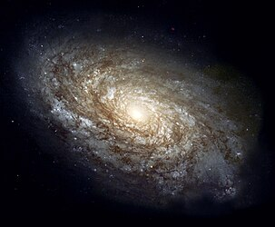

Definición
Una galaxia (del griego γαλαξίας ‘lácteo’) es un conjunto de estrellas, nubes de gas, planetas, polvo cósmico, materia oscura y energía unidas gravitatoriamente en una estructura más o menos definida. La palabra «galaxia» procede de los griegos, los cuales atribuían el origen de la Vía Láctea a las gotas de leche derramadas en el universo por la diosa Hera mientras alimentaba al infante Hércules. La cantidad de estrellas que forman una galaxia es enorme y varía desde las galaxias enanas, con 107, hasta las galaxias gigantes, con 1014 estrellas.[cita requerida] Formando parte de una galaxia existen subestructuras como las nebulosas, los cúmulos estelares y los sistemas estelares múltiples.
Históricamente, las galaxias se han clasificado de acuerdo a su forma aparente (morfología visual). Una forma común es la galaxia elíptica que, como lo indica su nombre, tiene el perfil luminoso de una elipse. Las galaxias espirales tienen forma circular pero con estructura de brazos curvos envueltos en polvo. Las galaxias inusuales se llaman galaxias irregulares y son, normalmente, el resultado de perturbaciones provocadas por la atracción gravitacional de galaxias vecinas. Estas interacciones entre galaxias vecinas, que pueden provocar la fusión de galaxias, pueden inducir el intenso nacimiento de estrellas. Finalmente, tenemos las galaxias pequeñas, que carecen de una estructura coherente y también se las llama galaxias irregulares.
Según estudios publicados en 2016, se estima que existen al menos 2 billones (2 millones de millones) de galaxias en el universo observable, esto es, diez veces más de lo que se creía anteriormente. La mayoría de las galaxias tienen un diámetro entre cien y cien mil parsecs y están usualmente separadas por distancias del orden de un millón de parsecs. El espacio intergaláctico está compuesto por un tenue gas, cuya densidad media no supera un átomo por metro cúbico.[cita requerida] Muchas de las galaxias están dispuestas en una jerarquía de agregados, llamados cúmulos, que a su vez pueden formar agregados más grandes, llamados supercúmulos. Estas estructuras mayores están dispuestas en hojas o en filamentos rodeados de inmensas zonas de vacío en el universo.
Se especula que la materia oscura constituye el 90 % de la masa en la mayoría de las galaxias. Sin embargo, la naturaleza de este componente no está demostrada, y de momento aparece solo como un recurso teórico para sustentar la estabilidad observada en las galaxias. La materia oscura fue propuesta inicialmente en 1933 por el astrónomo suizo Fritz Zwicky, pues la rotación observada en las galaxias indicaba la presencia de una gran cantidad de materia que no emitía luz. No obstante, existen muchas otras galaxias además de la nuestra. Las estimaciones en torno a su número rondan los 2 billones solamente en el universo observable. El Telescopio Espacial Hubble observó una pequeña porción del espacio durante 12 días y descubrió 10 000 galaxias, de todo los tamaños, formas y colores.

A veces las galaxias se acercan demasiado y chocan entre sí. La Vía Láctea algún día colisionará con Andrómeda, su vecina galáctica más cercana. La Colisión Vía Láctea-Andrómeda tendrá lugar dentro de cinco mil millones de años, dando lugar a una galaxia que probablemente será de tipo espiral llamada Lactómeda. Las galaxias son tan grandes y están tan expandidas en los extremos que, aunque se choquen entre sí, los planetas y los sistemas solares a menudo no llegan a colisionar.